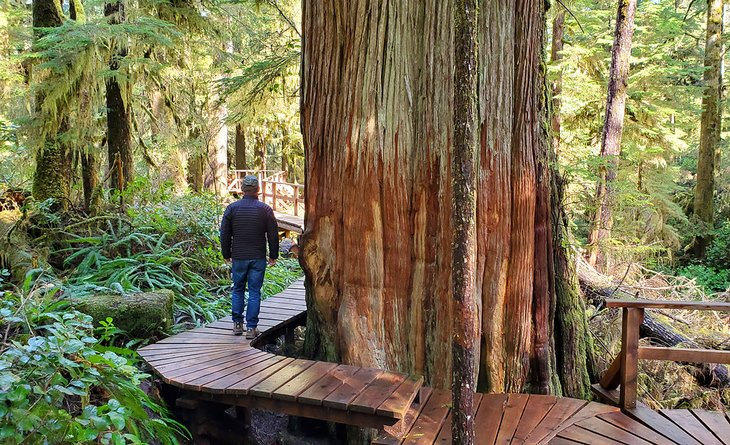
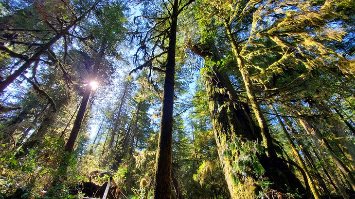
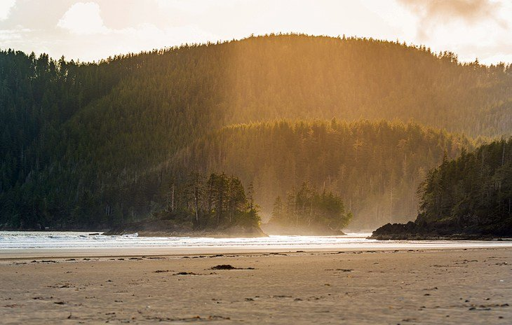
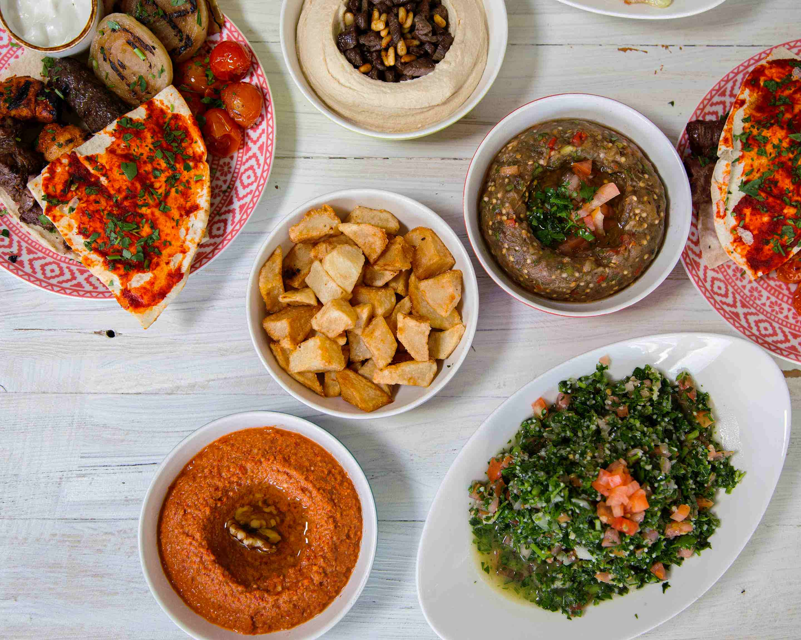
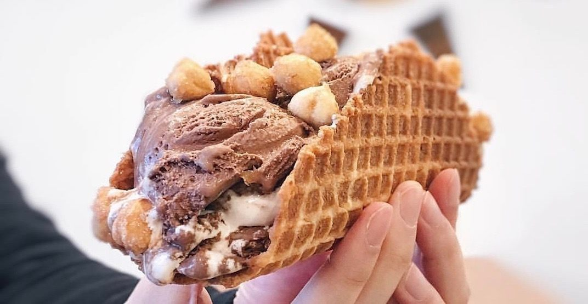

These are my favourite things to do in British Columbia.
Hiking
There are many places to hike in British Columbia. These are just a few.
- Pacific Rim National Park Reserve 
- Rainforest Trail in Tafino 
- San Josef Bay Trail 
Explore bakeries and restaurants
I enjoy walking around Vancouver looking for interesting places to eat. Here are a couple of my favourites places.
- Unchai Restaurant
- Mazahr Lebanese Kitchen 
- Rain or Shine 
If you are ever in British Columbia, these places are definitely worth a visit!